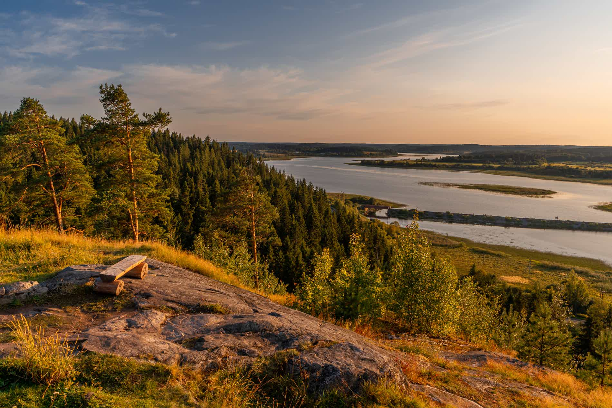
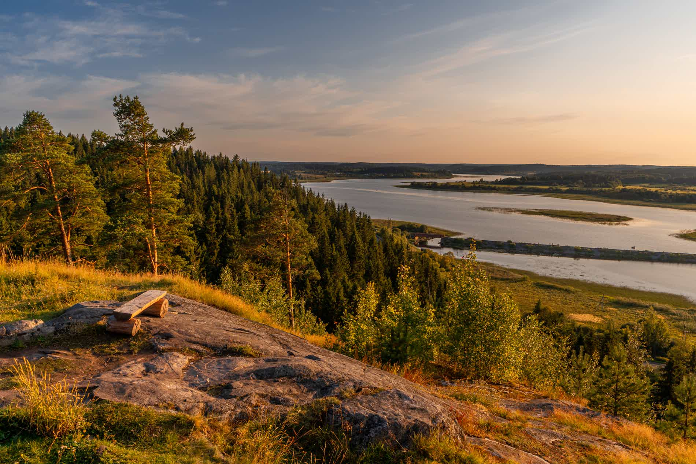

Сортавальский район
Добро пожаловать в Сортавальский район – удивительный край, где величественная природа Карелии встречается с богатой историей и культурой! Расположенный на берегу Ладожского озера, этот регион славится живописными ландшафтами, чистыми озерами, гранитными скалами и уникальными достопримечательностями.
Расположенный в Северном Приладожье, Сортавальский район по праву считается одним из самых красивых мест Карелии. Этот удивительный край сочетает в себе величественную северную природу, богатую историю и уникальные достопримечательности, привлекающие туристов круглый год.
 
